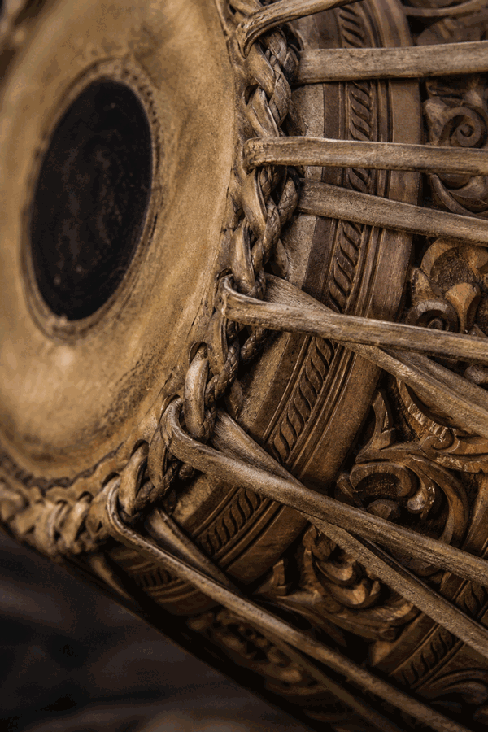
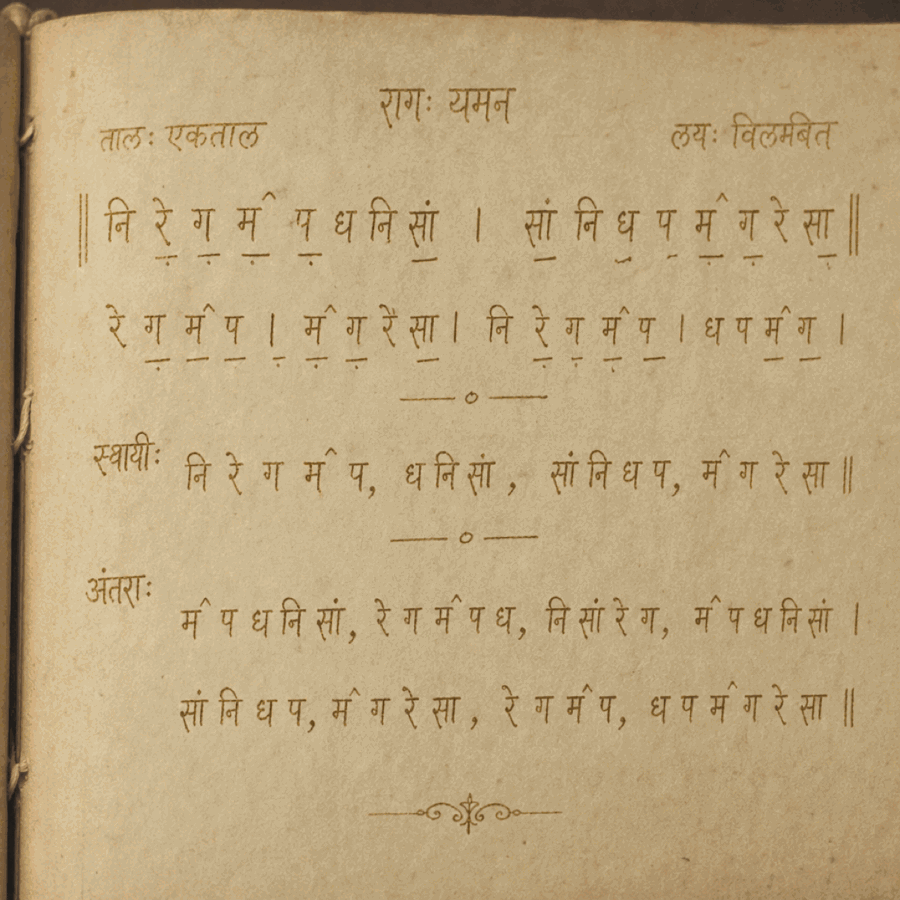
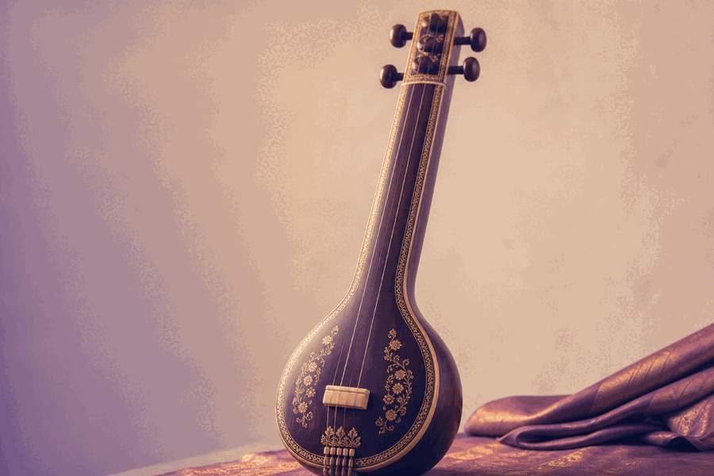

पखावज और ध्रुपद का अटूट संबंध
कैसे पखावज की गंभीर थाप ध्रुपद गायन की आत्मा को जीवित रखती है — एक तालवादक के दृष्टिकोण से बारह माना तालों का परिचय और उनकी रचनात्मक संभावनाएँ।
पूरा लेख पढ़ें →
कैसे पखावज की गंभीर थाप ध्रुपद गायन की आत्मा को जीवित रखती है — एक तालवादक के दृष्टिकोण से बारह माना तालों का परिचय और उनकी रचनात्मक संभावनाएँ।
पूरा लेख पढ़ें → परंपरा
परंपरा
बीसवीं सदी में डागर परिवार ने कैसे ध्रुपद की उज्ज्वल परंपरा को विश्व मंच पर पुनर्जीवित किया।
पूरा पढ़ें →
राग सिद्धांतध्रुपद के आलाप में मौन के क्षणों का महत्व — स्वरों के बीच अंतराल कैसे राग का प्राण रचते हैं।
पूरा पढ़ें → शिक्षण
शिक्षण
भोपाल के ध्रुपद गुरुकुल में पाँच वर्ष — साधना, अनुशासन और संगीत के साथ जीवन का अनुभव।
पूरा पढ़ें → इतिहास
इतिहास
सोलहवीं सदी के अकबरी दरबार से लेकर आधुनिक स्टूडियो तक — ध्रुपद का सांगीतिक यात्रा-वृत्तांत।
पूरा पढ़ें →
वाद्यतानपुरे की मिलवट और जवारी पर एक विस्तृत तकनीकी विवेचन — साधक के लिए अनिवार्य ज्ञान।
पूरा पढ़ें →
प्रदर्शन
मारुसहाब फातिमा खान से अमेलिया कुनिंघम तक — महिलाओं द्वारा ध्रुपद के क्षेत्र में किया जा रहा योगदान।
पूरा पढ़ें →